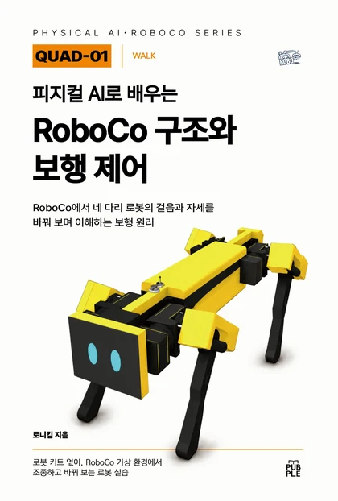

구매하기

『피지컬 AI로 배우는 RoboCo 구조와 보행 제어』는 종이책(POD)과 전자책으로 만나볼 수 있습니다. 아래 서점에서 제목으로 검색한 결과가 열립니다.
책에서 얻는 것 — 일곱 실습 모델을 어떤 순서로 쓰고, 장마다 무엇을 관찰하고, 어떤 값을 하나씩 바꿔 비교하며, 넘어지면 어느 층부터 확인하는지. 25개 CHAPTER의 실습 안내와 부록 A~F(연결표·키맵·IK 한계 기록표·실험 기록표·보행 오류 진단표·용어와 단위), 최종 미션 카드가 들어 있습니다.
종이책
전자책
영어판
미정English edition
실습 파일 — 실습 코드 ZIP과 Workshop 모델 안내는 구매 전에도 확인하고 WALK 첫 실행까지 해 볼 수 있습니다. 실습 순서와 원리는 책에서 다룹니다. 실습에는 Steam용 RoboCo가 필요합니다. 실습 파일 내려받기
함께 보면 좋은 책 — 입력·제어·움직임·관찰의 기본 흐름을 4륜 로봇으로 먼저 익히고 싶다면 CORE-01 『피지컬 AI로 배우는 RoboCo 로봇 구조와 Python 제어』를 함께 볼 수 있습니다. 선수 조건은 아닙니다.